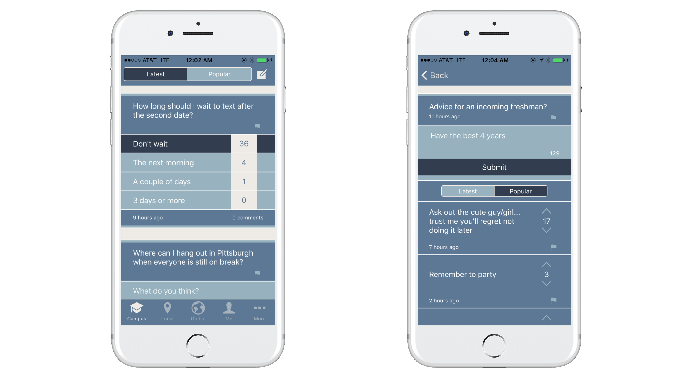
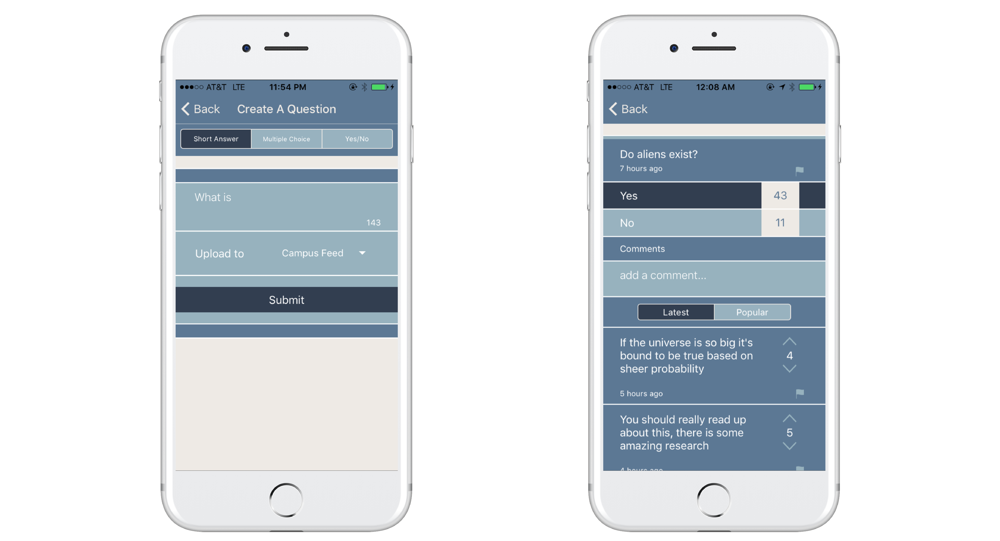
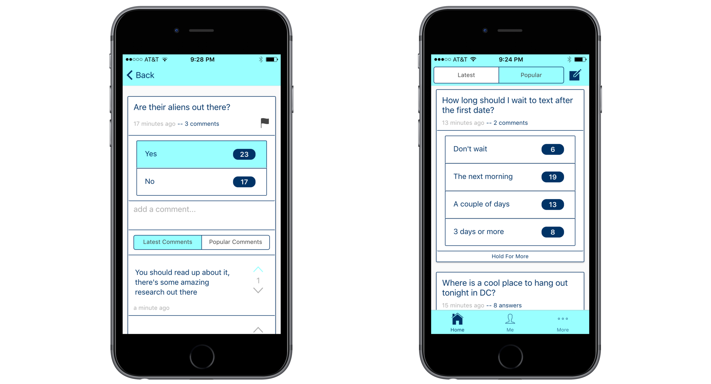
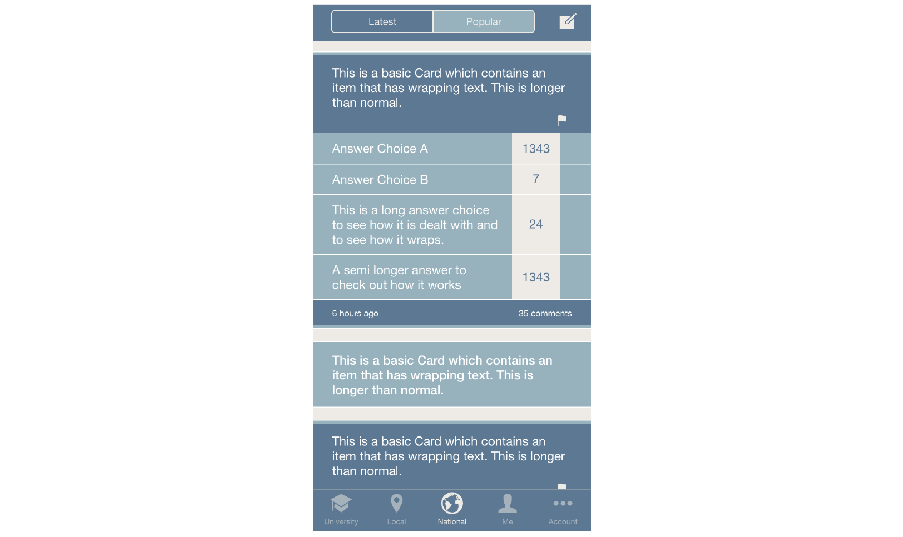

Designed and built Canvass, an anonymous context specific question and answer mobile app.
Dates: March 2016 - April 2017
Team: Scott Dombkowski, Michael Wang, and Josh Antonson
Canvass was an anonymous context specific question and answer mobile app. Users had the ability to ask three types of questions: yes or no, multiple choice, and short answer. Questions could be posted on three different feeds: university (questions from your university/college or alma mater), local (questions from people within a 10 mile radius from you), and global (questions from all over the world). Users had access to questions on their chosen university feed, a local feed based on their location, and the global feed.
Canvass was specifically designed for questions and answers. We believed and still believe that questions have the ability to drive society forward and bring about progress. We also still believe that individuals are naturally curious and want to consume as much information as possible. We hoped that as our generation’s and future generations’ desire to consume information grew, that questions and answers would provide the perfect tool to both entertain and improve one’s knowledge.
When we initially released Canvass, users only had access to their local feed. Users were able to see questions that were relevant to their local community and answer those questions by utilizing their own knowledge. Users were also able to ask questions knowing that they were going to be seen and answered by peers within their local community. We decided to increase the amount of feeds available to users from 1 to 3 for a number of reasons. These additional feeds enabled students to stay engaged with their campus community while on breaks, allow smaller schools that are geographically close to larger schools to have their own dedicated feed, and provide the users with the choice of which feed is most relevant to their question.
We also decided to keep all content on our platform anonymous, so users were more comfortable while engaging with our app.
We hoped to turn Canvass into a community with a lively dialogue of questions and answers that were both informative and funny, where users were able to take the information they consumed within the app and utilize it within their own life. My teammates and I stopped putting time into Canvass, due to a decrease in user engagement.

Canvass 2.0 Screens

Canvass 2.0 Screens

Canvass 1.0 Screens

Canvass 2.0 Sketch Mockups